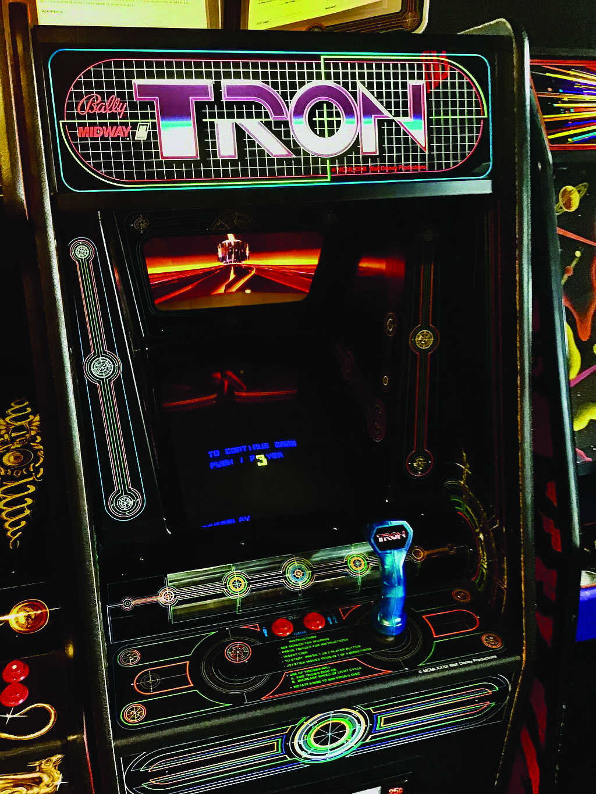

Disney recently dropped the first trailer for a new movie, Tron Ares. Fans have long awaited a sequal to Tron Legacy, which was 15 years ago! Excitement for the franchise grows as talk of this movie spreads. To veiw the trailer
click here.
You might be familiar with the videogames, or Tron Legacy. The universe of Tron is a sci-fi action adventure set inside a computer. The story brings to life the inner workings and going ons of computer processes.
Also I dont know why these images are so bright, it might be because they are in CMYK. They were in the magazine.
Wow look at that, an exta box! How cool is that? Too bad Mikey couldn't think of any more Tron info to share..